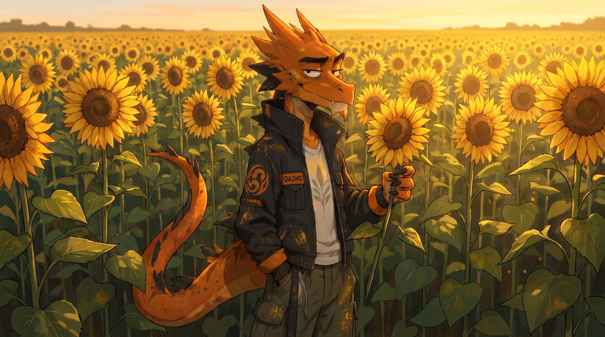
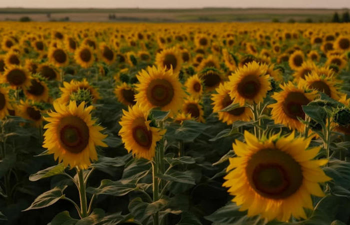
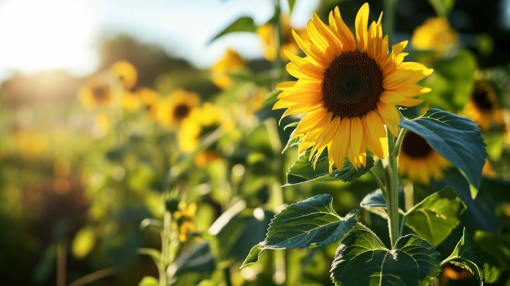

СЕЛЕКЦИОННАЯ ПРОГРАММА
"ПОДСОЛНЕЧНИК"
Описание программы "Подсолнечник"
Подсолнечник является главной масличной культурой на территории СНГ: его доля в общем объёме производства растительных масел составляет 75–80 %. Среди масличных культур мира по площади посевов он занимает второе место, уступая лишь сое. За последние три десятилетия мировые посевные площади подсолнечника увеличились в два раза и сейчас достигают 30 млн га. Основные посевы подсолнечника сосредоточены в Европе (около 64%), Америке (9%) и Азии (4%). Максимальные площади заняты подсолнечником в РФ (около 7 млн га), на Украине (до 5 млн га), в странах ЕС (около 4 млн га), в Аргентине (около 1,5 млн га), США (до 1 млн га). На значительных площадях возделывают подсолнечник в Индии, Турции, Румынии, Югославии, Болгарии, Испании, Канаде.

Направления селекции:
- Устойчивость к заразихе
- Засухоустойчивость
- Короткостебельность
- Устойчивость к болезням (ЛМР, фомоз, фомопсис, серая гниль, сухая гниль, бактериальная гниль)
- Устойчивость к гербицидам
- Высокое содержание олеинового масла
